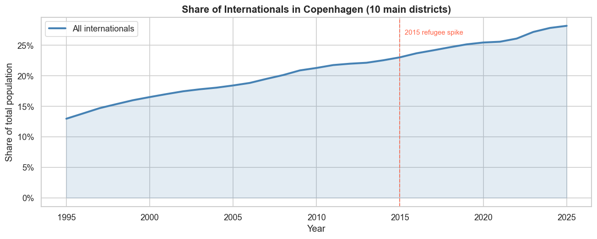
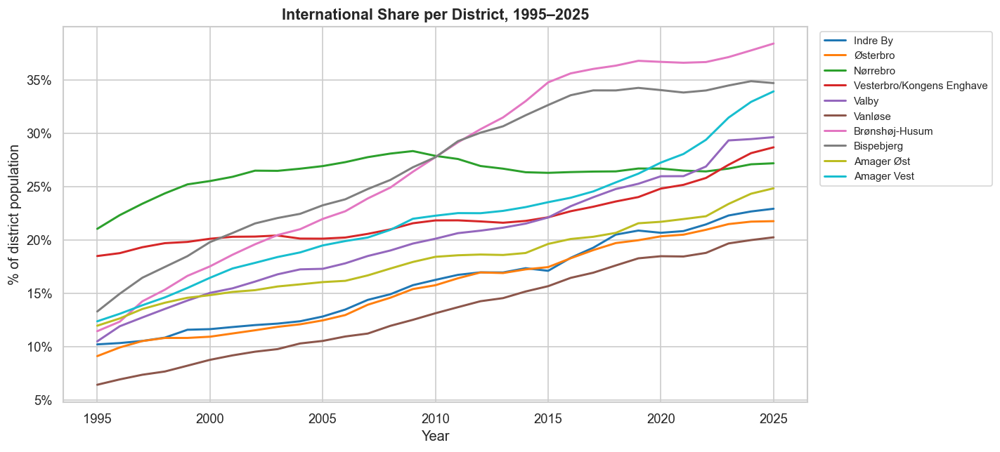
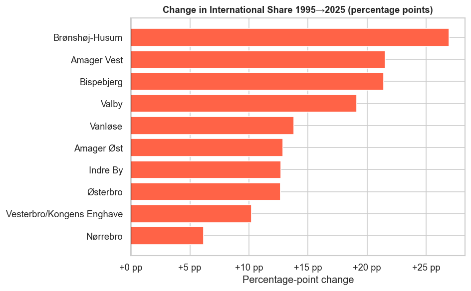
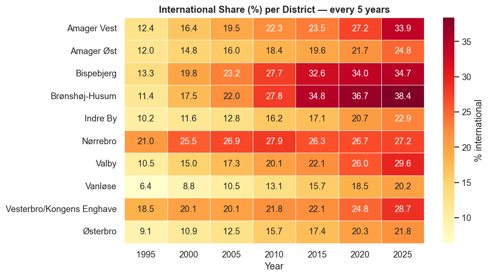
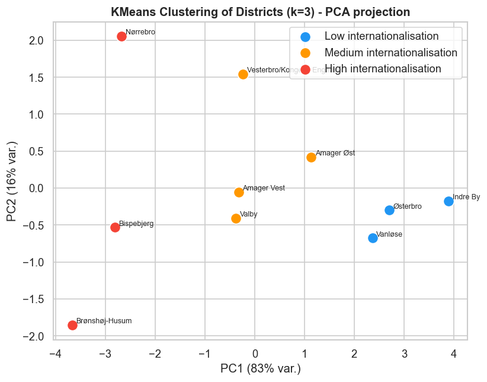
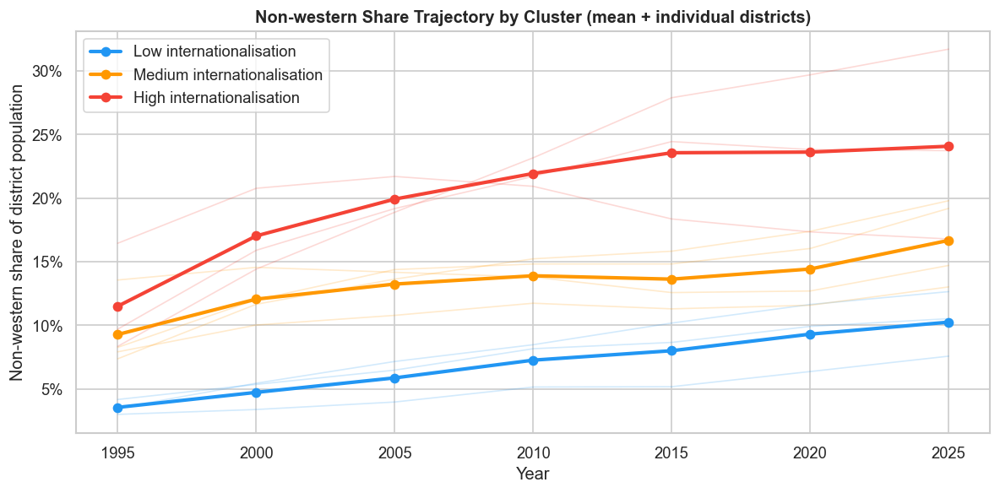
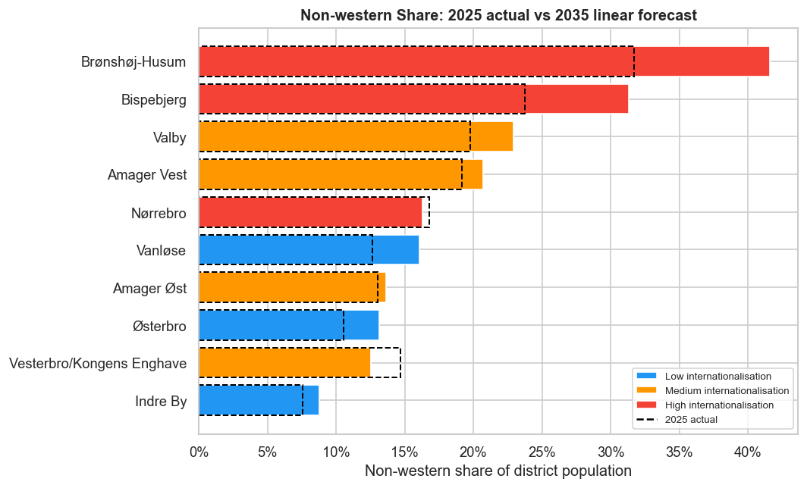

1. Start with the baseline: the city grew
Before looking at internationalisation, we need the simplest reference point: Copenhagen's total population. The first chart shows the city-wide trend over three decades—a clear upward trajectory from 1995 to 2025.

Total Copenhagen population over time. The steady increase tells us the city is growing, not shrinking.
2. Growth was uneven across neighbourhoods
City-wide growth hides local differences. Some districts expanded much faster than others, which matters because demographic change does not happen on a flat map: it is experienced in neighbourhoods.

Each line represents one district. Some lines climb steeply (rapid growth), others stay flat (stable). This reveals neighbourhood-level differences hidden by the city average.
3. The central story: internationalisation also diverged
The most important measure is not only how many people live in each district, but what share of residents have immigrant or descendant backgrounds. Using shares makes districts comparable even when their total population sizes differ.

The change in international share from 1995 to 2025 for each district. Long bars = rapid internationalisation. Short bars = slower change. The pattern is not uniform.
4. A compact view: district by year
The heatmap compresses the long-term trend into one view. Darker cells indicate higher international share. This makes it easier to see when changes accelerated and which districts stand apart.

Each row = a district, each column = a year. Darker = more international. Look for rows that get much darker over time, or rows that are already dark in 1995.
5. Who are the communities behind the change?
District trends show where internationalisation happened. Country-of-origin data gives the story names. The charts below show which origin communities grew most in absolute numbers over the period.

Ranking of the top 10 origin countries. Each line shows how one country's population grew over 30 years.

The composition of all foreign-origin residents. Each color is a different region or country. The total area height = total international population.
6. Geography: the pattern has a shape
Maps place the district-level changes back onto Copenhagen. The first map shows where international share is highest in 2025. The second map shows which districts grew most in absolute population size from 1995 to 2025.
7. Finding neighbourhood types
The notebook also groups districts with similar internationalisation trajectories using clustering. This keeps the technical work behind the scenes, while the website presents the result in plain language: some districts follow low, medium, or high internationalisation paths.

Districts plotted in a simplified space. Colors represent cluster groups. Districts that look close together have similar patterns.

How each cluster group evolved from 1995 to 2025. Different colored lines = different neighbourhood types, each with its own path.
Instead of presenting model details first, the website uses the model as a way to simplify the story for a non-technical reader.
8. Looking forward, carefully
The notebook includes simple trend forecasts. These should be read as "what happens if the past trend continues", not as firm predictions. They are useful because they make the direction of change visible and invite discussion about what might slow, accelerate, or reshape the pattern.

Projected international share for each district through 2035. Assumes the past 30-year trend continues.

Comparison of today vs. 2035 projection for each district. Shows which neighbourhoods will likely change the most.
Conclusion
Copenhagen's population story is not only about more people. It is about a changing urban composition that developed unevenly across space. The clearest takeaway is that internationalisation is both a city-wide trend and a neighbourhood-level pattern: to understand it, we need timelines, district comparisons, origin data, maps, and a little modelling behind the scenes.